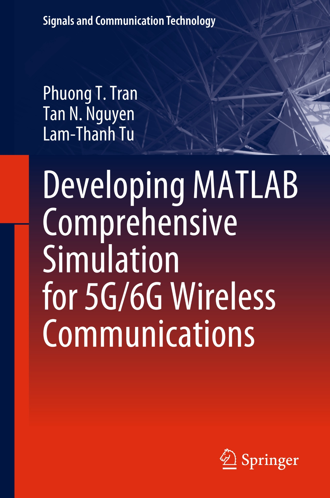
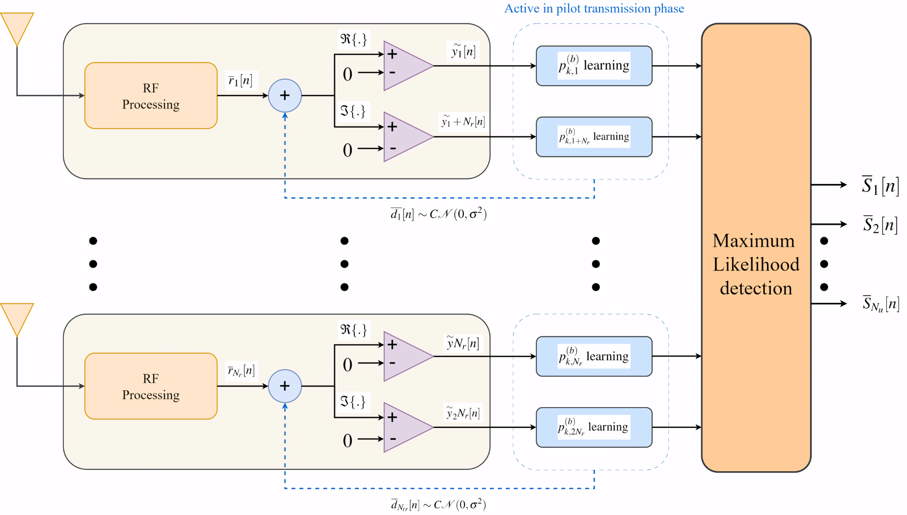
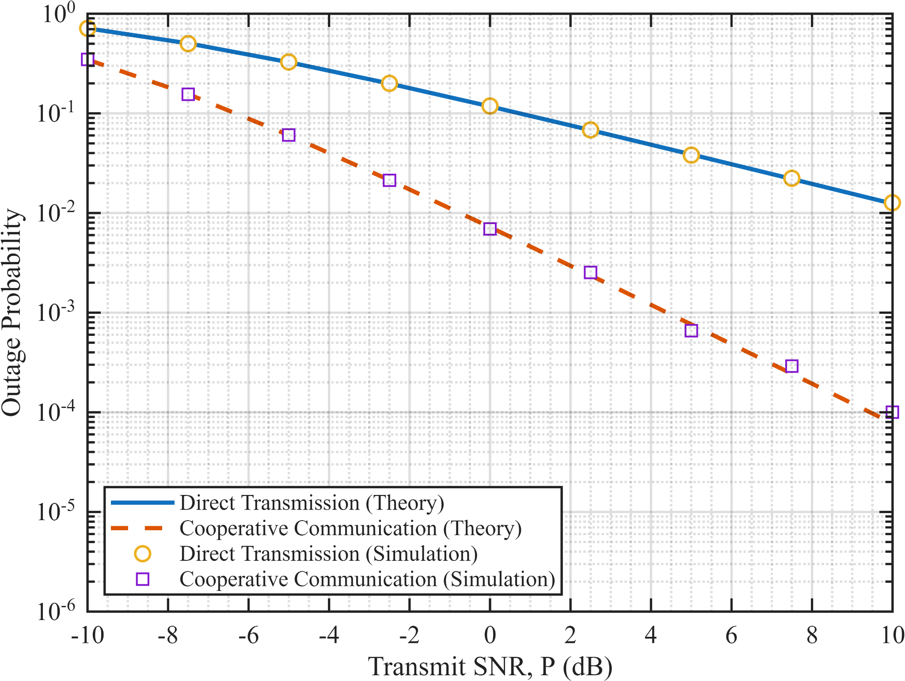
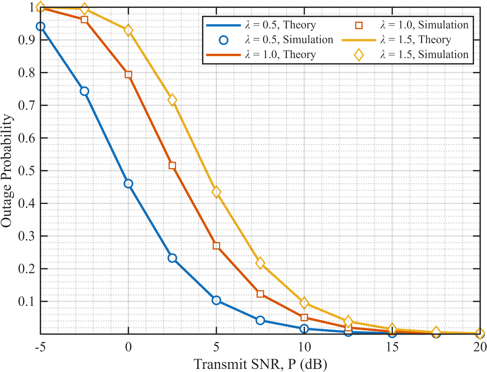
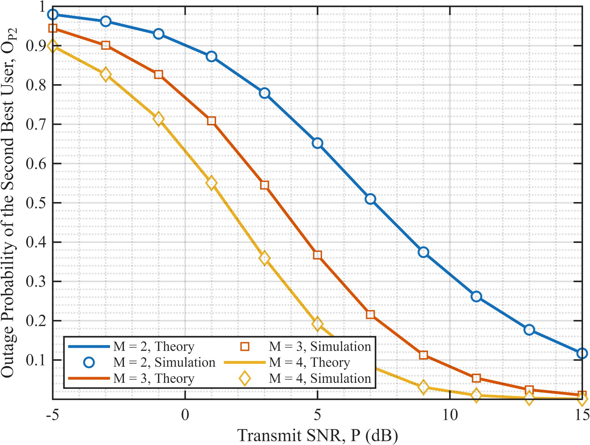
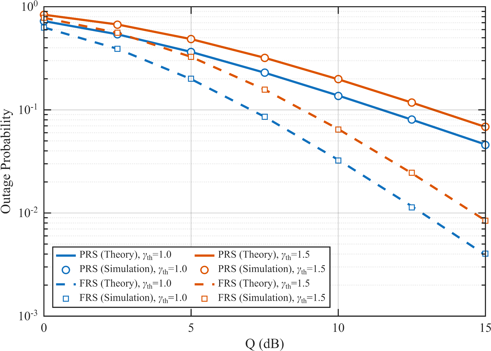
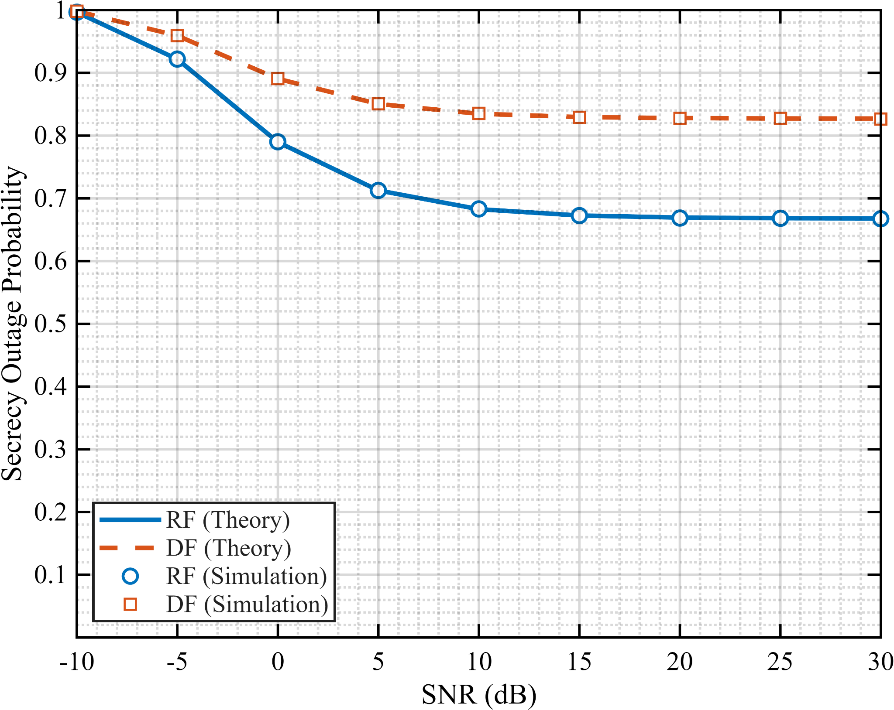
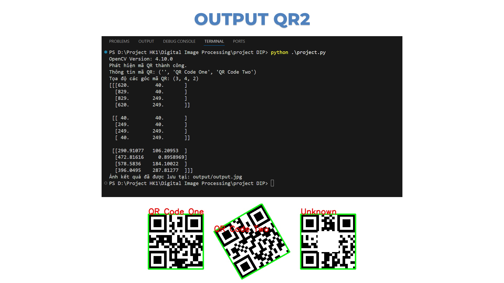
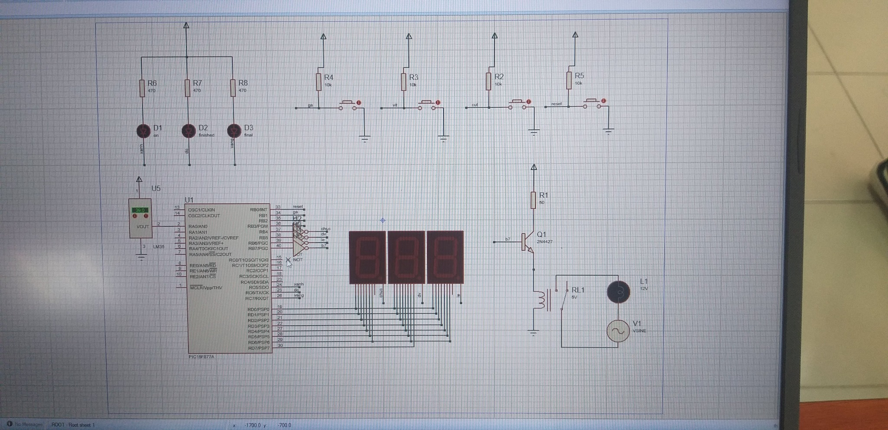
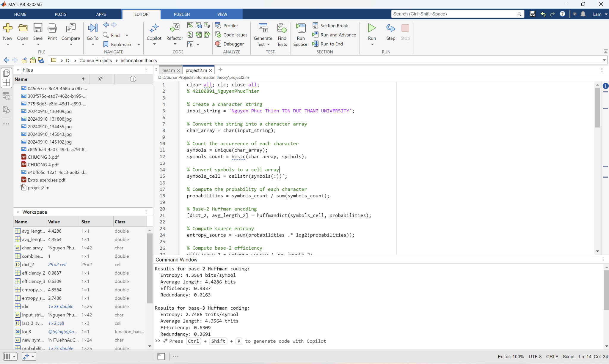

Book contribution Springer · Signals and Communication Technology
Developing MATLAB Comprehensive Simulation for 5G/6G Wireless Communications
Contributed to technical chapters, simulation workflows, and practical examples for a guidebook on evaluating energy-efficient technologies in future wireless networks.
View book ↗
FEATURED CONTRIBUTION
Research program
Global Talent Training Program for Copyright Management Technology in Game Contents
Vietnam Ton Duc Thang University× South Korea Hongik University
Research support: literature review, simulation implementation, and troubleshooting.
03 IEEE Access papers
Project outputs IEEE Access · 2025
RIS · NOMA IEEE Xplore ↗ Ambient backscatter IEEE Xplore ↗ Secrecy · Energy harvesting IEEE Xplore ↗
Research studies

View figure
Signal detection
Machine Learning-Based ML Detection for 1-Bit Large-Scale MIMO
Bias and dithering learning for reliable signal detection with 1-bit ADCs, reduced CSI requirements, and lower implementation complexity.
Approach & scope + Study bias learning and dithering learning in low-resolution receiver architectures. Evaluate detection without detailed channel state information, with an emphasis on energy and implementation efficiency.

View figure
Cooperative networks
Cooperative Multi-Hop Relaying in Wireless Communications
Analytical and MATLAB-based workflows for relay-assisted transmission, connecting cooperative forwarding and diversity combining to outage performance.
Approach & scope + Develop a research guide for students and early researchers studying cooperative and multi-hop systems. Build system models and compare theoretical outage analysis with Monte Carlo simulations.

View figure
Channel modeling
Generalized Fading Channel Modeling and Performance Evaluation
A simulation-based study of wireless channel statistics, linking fading models to outage probability, bit error rate, and average Shannon capacity.
Approach & scope + Analyze Rayleigh, Nakagami-m, Rician, cascaded Rayleigh, and alpha-mu fading channels. Implement MATLAB simulations and analytical performance evaluation as a thesis-scale study guide.

View figure
Multiple access
NOMA-Based User Selection in Random Wireless Networks
SIC-based decoding and strongest-user selection in random networks, examining the effects of SNR, user population, and power allocation.
Approach & scope + Model a base station selecting the two strongest users for non-orthogonal multiple access. Develop outage analysis and simulation models to explore fairness between near and far users.

View figure
Spectrum sharing
Relay Selection in Cognitive Radio Networks
Partial and full relay selection for underlay cognitive radio, studying reliability under Rayleigh fading and primary-user interference constraints.
Approach & scope + Derive and validate outage probability expressions with multiple primary-user constraints. Examine spectrum utilization, coverage, and the distinction between coding gain and diversity gain.

View figure
Physical layer security
Physical Layer Security in Relay-Assisted Wireless Systems
A comparison of Decode-and-Forward and Randomize-and-Forward relaying through secrecy outage probability and average secrecy capacity.
Approach & scope + Develop a research guide for secure relay-assisted transmission over Rayleigh fading channels. Study the secrecy performance and implementation complexity trade-off between the two protocols.
Course projects

View gallery
Computer vision
Automated QR Code Recognition for Vietnamese Citizen ID Cards Detect and decode QR codes using grayscale conversion, adaptive thresholding, and contour detection.
↗

View figure Embedded systems Automatic Egg Incubator with PIC16F877A Control temperature, humidity, and egg rotation through sensor monitoring and relay-based actuation.

View figure Information theory Entropy Analysis and Huffman Coding in MATLAB Model discrete sources and compare code length, coding efficiency, and redundancy in source coding.